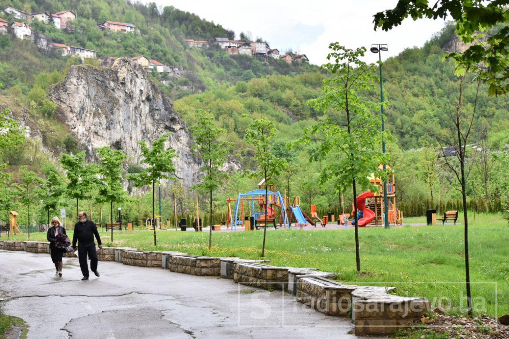
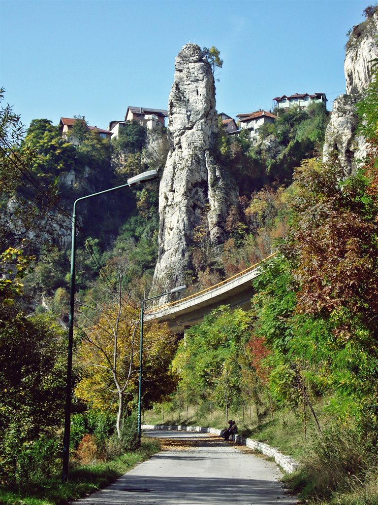
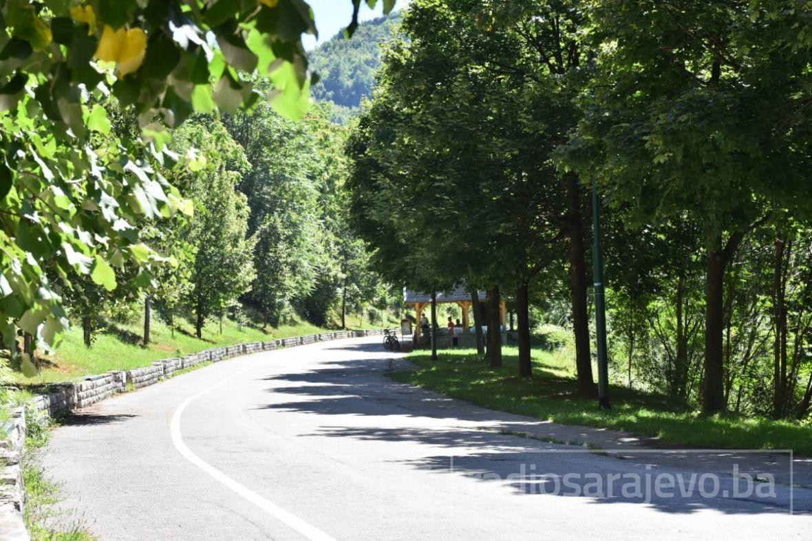

Na istočnom ulazu u Sarajevo nalazi se Dariva, najstarije sarajevsko šetalište kroz koje prolazi ponekada teško prohodni kanjon rijeke Miljacke. Uz ovu šetnicu, dugačku osam kilometara, posađen je drvored „Aleja ambasadora” sa preko 200 stabala lipe, koja su svojim rukama posadile diplomate na službi u BiH.
Pokraj šetališta nalazi se i stijena za penjanje – Dariva, omiljeno odredište brojnih alpinista, a nedaleko se nalazi i stijena Babin zub, gdje je i započela historija alpinizma u Sarajevu. Dariva je zatvorena za promet motornih vozila i predstavlja divno i mirno mjesto za šetnju pokraj rijeke.
 Prostor je bajkovit, a dok ima dnevnog svijetla ispunjen je uživaocima prirodnih ljepota, relaksacije i rekreacije. Ako odlučite otići do kraja ovo šetnice, put će vas dovesti do Kozije ćuprije, jedinog potpuno sačuvanog mosta iz osmanskog perioda na rijeci Miljacki.